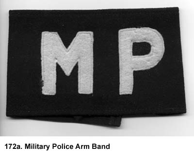
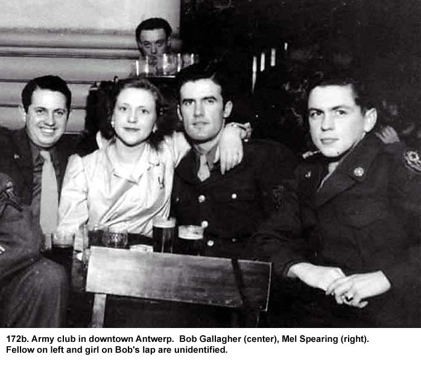
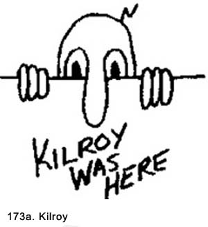

|
Table of Contents < - - - return Chapter 29 < - - - next
World War II Story by Robert F. Gallagher Chapter 28 - Military Police Duty Speak softly and carry a big stick; you
will go far. _______________________ The War Was Over - But Not The Fighting MP duty was interesting and often exciting. Our uniform consisted of a helmet liner, dress uniform, a gun belt with a loaded .45 caliber pistol and an extra clip of ammunition. We carried a baton (club) that was lead weighted. The helmet liner was stenciled in front with the letters MP, and we wore a black armband on our left sleeve with white letters MP stitched on it (See Fig. 172a). I had some prior experience firing a .45 caliber pistol, but most of the men had not. The baton was a very lethal weapon, and we were instructed to use it with care. That bit of information was the only training we got on how to act as an MP. "Almost immediately, someone hit me on the
head from behind, and I went down on my hands and knees. I was dazed but . . . I stood up and turned, swinging my
nightstick . . ."
There was a special investigative division in our battalion that worked closely with the Belgian police and the British MPs. Sergeant Mellencamp of our battery's second platoon was in charge of it, and they handled the more serious crimes like rape, murder, and major black market crimes. The rest of us handled the less serious cases and turned the ones needing more investigative or prosecution work over to that division. Our headquarters was a building in downtown Antwerp. It also had a section that was used as a jail. We would go out in two-man crews from 2000 hours in the evening until 0200 hours the next morning. Sometimes it was on foot patrol, and other times we drove a Jeep. It soon became apparent our main challenges were to check passes, stop fights, pick up drunken GIs who could not navigate on their own, soothe abused saloonkeepers, and try to keep peace in general. Without any instruction on exactly how to handle specific situations, each crew developed their own style. We knew putting on the symbols of an MP would automatically make us unpopular with most GIs. This dislike (or hatred in some cases) resulted from personal experiences and from horror stories about some harsh treatment being handed out. Perhaps the greatest underlying reason was the feeling MPs were an extension of the military that reached out of the camps where we were and infringed on our free time. Because most of the men in our outfit understood and sympathized with this feeling, we made minimum effort to enforce military courtesy, uniform violations, or other minor infringements of military codes. For example, if we saw a GI with his tie off, we would just yell at him to put it on. There was no effort made to make sure the dress code was enforced by arrest or detainment. A few of the MPs broke the unwritten rule by spending most of the evening checking passes and bringing those without one or with outdated ones into the station. They were soon labeled the chicken s--- detail. The rest of us felt our major assignment was limited to keeping law and order. This could be a major problem on some nights, especially right after payday when money flowed freely and drinking was at its peak. We soon found the easiest way to get through an evening of duty without some physical confrontation was to practice the art of diplomacy and not rule with an iron hand. Most of us liked the challenges of keeping men from fighting and mediating the sometime chaotic experiences in the bars. However, we were not always successful at mediation and we had to enforce the law. The town was full of GIs who were celebrating the fact they were going home and who were enjoying their last fling in Europe. In addition to the American soldiers from Camp Tophat, there were Canadians, British, Australian, Palestinians Jews, and soldiers from other countries. Because Antwerp is a port city, there were also merchant marine sailors from ships around the world. The mixture of people from different countries with their predispositioned prejudices was the primary cause of trouble. Mix in the alcoholic state resulting from the heavy traffic in cafes, and you can see why the MPs were kept busy. I was in more fights in Antwerp than in my whole life elsewhere. However, because I had a baton and a gun, the fights were heavily weighted in my favor and I never fretted about the eventual outcome. I had something else going for me. My partner on most nights was a guy named Dominic Nucci who had been in another gun section in our battery. I didn't know him until we started to pull this MP duty. He was of average height and weight. and quite an unassuming person. He wore glasses, and he looked more like a high school honor student than an MP. However, appearances were deceiving in this case. Before the war, he had been a CYO (Catholic Youth Organization) boxing champion in New York City and was as tough as they came. Many of the incidents we had to settle started with a bar owner phoning in a complaint to our headquarters. Sometimes he would just go out in the street looking for us. We knew where to patrol because most of the problems started in the seedier bar area of town. While we were armed to the teeth, in most cases the gun and club were not of much use to us. What we really should have had was a training course in psychology. We certainly did not want to shoot or club some fellow GI when he was drunk-ninety-nine percent of the cases involved drunks-unless we were under violent attack. A good course in jujitsu would also have helped immensely in the execution of our policemen duties. Most fracases started with a shouting match, deteriorating to some pushing and shoving before a full-fledged fight would develop. If we could not settle it peacefully, we would hold one or more ringleaders until further help came. We would then load them into a two-and-a-half ton truck for the trip back to headquarters. However, most of the time we turned the troublemakers loose, and because of that we started to get heat from the brass. They heard stories about things that happened on the street, but there were only a few prisoners being brought in. Also, in some cases, shop owners who had their places of business torn up came to our headquarters seeking restitution for damages done by soldiers and there wasn't even a report on the incident. One evening Dominic and I were called to a bar where three British merchant marine seamen were tearing up the place. There were no British MPs around so we were left to handle the situation. We subdued them and loaded them into the back of our Jeep. On the way to the British MP station, they convinced us they were nice guys, and we decided to take them out to the docks where their ship was berthed. In most cases, except the most extreme ones, we were the police, judge, and jury. On the way out to the docks with the three sailors, they got belligerent again and started to hit us on the back of our heads with their fists. Dominic, who was driving, stopped the Jeep along the side of the road, and we got out to fight. Dominic had two of them on the ground in about a minute, even though they were both considerably bigger than him. He then stood and watched me wrestle on the wet ground with the third one. Finally, Nucci and I got back into the Jeep without our seamen and headed back into town. The Brits were shouting at us "You bloody this," and "You bloody that," until we got out of earshot. Despite their use of the word bloody, it didn't have the effect on GIs it was intended to have. Dominic was laughing at me because my uniform was covered with mud and I was openly expressing my displeasure with the Limeys. My lower lip was beginning to swell from a punch I had received in the brawl. I kept asking myself why I had been so hesitant about using my club. We both pledged to not be so nice the next time we picked up someone for a violation, but it was not very long before we went back to our old habits. We had no radios in our Jeeps, so we used our sirens for signals. If a major incident arose, it was usually phoned into our MP headquarters and a Jeep would be dispatched. The Jeep from headquarters would open up the siren and hold it open for the whole trip. All the other MPs in the area would converge on the location of the sound. One evening, Dominic and I were touring the downtown district. I was driving when we heard a siren screaming across town. I picked up speed and came out of a side street onto De Keyserlei Street, where I made a turn. It had been raining, and the brick streets were as slick as glass. Our Jeep skidded all the way across the street, and we bounced off the curb of a streetcar safety island filled with people. As I straightened out the vehicle, I looked back at the civilians standing on the island. They were all shouting at us, but it did not appear anyone had been hurt. We kept on going. We arrived at the Broadway Café, the most notorious trouble spot in the city. The Jeep we assumed had used the siren earlier was parked out in front. We ran inside the crowded bar and saw two MPs standing in the middle of the dance floor where about a dozen British soldiers were tearing their uniforms off. The MPs had lost their batons and their shirts were torn down over their gun belts, so they could not reach their guns. We waded into the fight. Almost immediately, someone hit me on the head from behind, and I went down on my hands and knees. I was dazed but the hard kick in the ribs I received as soon as I fell reminded me the worst place I could be was on the floor. I stood up and turned, swinging my nightstick as hard as I could at a likely candidate for the one who sent me down. In my rage, I was swinging for his head, but he threw his shoulder up, and I hit that instead. He went tumbling to the floor, yelling in pain and reaching for his wounded shoulder. By this time, more MPs were coming through the front door, and the fight was starting to balance in our favor. One of the two original MPs had finally gotten his torn clothes off his holster, and he pulled his gun. I knew what was going to happen next because he was a real hothead. He had been yelling above everyone else in the melee, "I'll kill you, you Limey bastard! I'll kill you!" Evidently, his use of the singular meant he had one particular British soldier in mind. He cocked the gun and then leveled it at one of the British soldiers. Before he fired, someone pushed the gun to the side, and his shot hit a mirror, which shattered with a terrible crash all over the dance floor. That stopped most of the action. Even the one who did the shooting was startled. Someone yelled something to him, but he did not fire again although he continued to wave the gun around, threatening to shoot British soldiers. It made the rest of us MPs nervous because we knew of his fiery temper and the gun did not have the safety on. He was starting to hit the Brits with it, and we knew it would not take much of a jolt to make it go off again. When we finally got control, we lined up MPs through the cafe and out to the street, where we now had a truck to haul the Brits into the station. As they passed the line of MPs, we would give each of them a jab with the end of our clubs. Many of them would be knocked to the street outside, where four MPs would pick them up and throw them on to the steel slats lining the truck floor. Some of them were quite beat up. Nucci had been doing his thing during the fight with a lot of success but he paid a heavy price. One of his hands was badly cut when he got it mixed up with the teeth of one of the Brits. He was taken to the hospital for stitched along with another GI who got hurt in the melee. Back at the station, a British officer arrived to complain about our brutality. Standing next to him was the soldier I had hit on the arm, now swollen to about twice its normal size. He had his jacket off and his shirtsleeve was slit to allow for the swelling. At this point I had cooled down, and I was sure glad I had missed his head. He was pointing me out to the officer, so I cut out a back door and left the station. My ribs were hurting something awful from the kick I received in the fight and I debated going to the hospital. I decided against it. I never heard anything more about the situation that night. The pain in my ribs took about a week to subside. We frequently visited the Army-sponsored clubs set up for the entertainment of GIs. The picture below (Fig.172b) shows the inside of one. I met this girl there and after drinking for several hours, I asked her if I could walk her home. She agreed and we left the club. We were near a large square that was well lit up with several streets leading into it. She walked up to one of the streets that was very narrow and dark. She told me to wait in the square while she went home for something. She walked down the street and was out of sight after entering about ten feet of the street. I waited for about twenty minutes but she never returned so I figured I was jilted. About a week later I ran into her when I was driving around in a jeep during MP duty. I stopped to ask her what happened and she became upset that I wasn't there when she returned. "I had to put the baby to bed," she said. That was the last time I saw her at my doing.  From our MP duties, we knew where the best civilian cafes, some with entertainment, were located. Best often meant the ones with the least number of fights. They were all very busy places. One of the civilian cafes that specialized in food rather than drink would give any GI who wanted it free food because the American Army had liberated the owner from a German concentration camp. We went there occasionally, but we always paid. The proprietor extended particular attention to us MPs because we were there in Antwerp much longer than the transient GIs. We had to argue with him at the door every time when he wanted to tear up the check. We did not think that was a good reason to get a free meal. One of my friends was dating a Belgian girl. He told several of us about her, and he mentioned she had a very short haircut. We all laughed and told him she had been a Nazi collaborator. When the Germans were driven out of Belgium by the Allied army, the Belgians shaved the heads of the women who had been too friendly with the Germans as a punishment for their fraternizing with the enemy. It might have been for just dating a soldier but usually it was because of a more intimate relationship. My friend was surprised to hear this, but it did not affect his love life. Sometimes, when we were through with MP duty at 0200 hours, we would drive out to a small cafe located near the docks before going back to our barracks. They served us two eggs, a small steak, toast, and coffee for fifty cents. In addition to being cheap, even for those days, it tasted good. Also, it was a nice way to unwind after spending an evening on duty. One morning we went there and they were closed. Later, we heard the place had been shut down for selling horsemeat. The steaks were a little bit dry, but we had attributed that to the cheap price. The Red Light District As part of our duty when we were patrolling in a Jeep, we had to make trips to the red-light district, which we hated. The district is named Schipperskwartier (a Dutch name) that translated meant something like sailors quarter. It surrounds a square known as Sint-Jansplein (translated as St.Johns Square). The two main streets are Burggracht and Aneessenstraat.1 Because the GIs had trouble pronouncing the names, they made up their own versions that were easier to pronounce. For example, Schipperskwartier became Ships-Waiter. The area was down near the waterfront and drew heavily on the merchant mariners in addition to GIs for its business. Prostitution was legal in Antwerp, and all the girls were registered. They were subject to periodic checkups by the Belgian authorities to make sure they were clean. We kept our trips to that area to a minimum because it was a real hellhole. In one area, the cobblestone streets were only eight feet wide with a two-foot-wide sidewalk on one side of the street. The buildings were right up against the street on one side and next to the narrow sidewalk on the other. It was like driving in a cavern, and the lack of streetlights made it quite spooky at night. In most areas, the only light came through a window where a whore was sitting looking out. They always had the same pose and a fake smile. Some of the men walking along the street would cover their faces when we passed. I guess they didn't want to be recognized. In the same vicinity there were a number of seedy bars with men hawkers out in front trying to draw customers into their establishments. One of them stepped out in front of our moving Jeep to tell us something or to register a complaint. Nucci was driving, and he never even slowed down when he saw him. The man was barely able to get out of the way without being hit as we continued on. "I should have hit the pimp," he said to me. He had no tolerance for anyone in that area. As we were leaving the red-light district one evening after several unpleasant encounters, Nucci commented, "That place is a real whorehouse." When he realized the redundancy of his remark we both had a big laugh. Whenever we had to go to the red-light district, we drove down the row of brothels as fast as we could without hitting someone. There was always someone-a soldier, a sailor, or a whore-trying to stop us with some kind of a problem. We stopped only when we saw blood, and not always then. It was a no-win situation every time, dealing with the low-lifers of society. There was no answer to most of their problems and, if there was, we did not have the training or time to solve them. Usually, we were asked by the victim of a crime to go and find someone who had robbed or beaten him or her. We did not know how to handle those problems, and we knew better than to bring criminals, even military ones, back to headquarters. There, they knew only how to lock up unruly drunks overnight and they had too many of them. We could have taken the victims to the investigative division but they, too, were badly overworked. We had been instructed by them to only bring in those individuals we could prove a case against. This we never had. Port cities, or at least those parts near the docks are known for their unsavory neighborhoods, but Antwerp was probably worse than most. With all the military men in the area, many of whom were desperate for a good time, a whole bunch of new candidates to the lower rung of society was added to the mix. Several of our MPs had been shot at in the red-light area, and there had been some vicious fights where several of our men got hurt. In one case, a jealous husband or boyfriend threw a corporal from our battalion out a second-story window. However, the incident had nothing to do with his military police duties. He was off duty at the time. When some of our men went to see him in the hospital, he was completely out of his mind, and we heard his wife was coming over from the States to be with him. We wondered why they were not shipping him back to the States. There was talk about prosecuting the offender, and the Army's provost was debating the merits of it. The problem was in how to protect the wife from the details. It was a real mess, but I never learned how it turned out. There were British MPs and Belgium police who were also on duty in Antwerp, but we were the only ones who carried ammunition for our guns. If a really dangerous situation arose, they would call on us and then step back and let us do the dirty work. One such incident happened to me. One night while Dominic and I were driving in the red-light district, we came upon a mob of people. The British MPs were there. They told us they had received a report a British soldier had shot a gun at someone from the second story of the building where they were assembled. A British Lieutenant there suggested that, since we had loaded guns, we should go into the building first to see what was going on. Dominic and I went in the front door to the hall and up the dimly lit staircase. The walls were old and dirty; the uncarpeted stairs creaked badly. There was no chance we were going to sneak up on anybody. We had our .45's out, cocked with the safeties off. We were both very nervous and moving slowly. We hesitated at the landing and just outside of the apartment for about ten seconds each as if that was going to somehow help our situation. The door to the apartment where the shot had come from was ajar. We looked in, and, just past the entrance hall, in a bedroom, we saw what looked like a man in a uniform with a gun in his hand lying next to a bed. There was a considerable amount of blood on the bed and the floor. When we moved into the apartment, we found the man, who was a British officer, and his woman companion were both dead. It appeared he had killed her and then committed suicide. At least, that's what it looked like to us. We decided to let the British officer figure it out. We yelled out the window for the Brits to come up. As we passed the British MPs in the hallway on our way down, one of them looked at us and said sarcastically, "Good show, mate. You did a bloody good job of it and without going bang, bang with those big cannons of yours." Dominic responded, "Next time I'll give you my gun and we'll see how you do you Limey sonofabitch." The Brit turned as if to start a confrontation, so I pulled Dominic by the arm to get him out of there. The Brit never knew what a favor I did for him. We left the area immediately, even though the lieutenant had told us to hang on, which we assumed meant stick around. We figured if he wanted us badly enough, he could find us back at headquarters. Going into that building turned out to be an anticlimactic event, but walking up those stairs to an unknown but potentially dangerous situation was another reminder why we did not like the red-light district. While driving back to town in our Jeep, we discussed why we hadn't thought about giving the Brits our guns to go into the building. We debated about reporting the incident to Sergeant Mellencamp's investigative department and decided to let the Brits tell him if they thought it was necessary. Kilroy There was a strange phenomenon going on during and after the war, wherever there were GIs present. It was especially prevalent in debarkation ports like Antwerp. The expression, Kilroy Was Here, was written on any public display that was accessible, and nobody knew who did it (See Fig. 173a). A cartoon drawing of a long-nosed smurf-like character peering over a fence usually accompanied it. The idea was for someone to find that short sentence, and sometimes the cartoon, in a place it would be least suspected. The original intent was to place it in a location such as a forward battlefield position where new arrivals would be surprised to see it. But it soon lost the surprise element and became a game where everybody was doing it. It would be in latrines, in among Army papers, on the pages of books, in church, on the side of a bus, on the bottom of a ship's bunk, and anywhere else you could think of. It was not unusual to see it written thirty or forty times in a day. It was graffiti gone amuck. The whole concept made no sense at all, but I guess that was the idea. There were many rumors about who had started the craze and legends even sprung up about it. The legend that seemed to be the most persistent gave the credit-blame might be a better word-for the first Kilroy Was Here to a shipyard inspector named Kilroy back in the States. While stationed in Antwerp, I took every opportunity to make trips around Europe. I went to Paris two more times and to Brussels half a dozen times. I saw most of the sights in these countries and had a lot of fun doing it. Chapter 29 < - - - next Table of Contents < - - - return _________________________ Footnotes and Source of Photographs. Copyright, Robert F. Gallagher, 1999 - 2015, all rights reserved on all images and content.
|